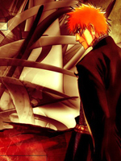

Bleach
-

Bleach (Japanese: ブリーチ Hepburn: Burīchi) is a Japanese anime television series based on Tite Kubo's manga of the same name. The series ran for a total of 366 episodes. Bleach was produced by Studio Pierrot and directed by Noriyuki Abe. Bleach's Japanese and English voice actors include some of the most credited and well known voice actors, including Masakazu Morita and Johnny Yong Bosch. The music was composed by Shirō Sagisu, who also composed the music for Neon Genesis Evangelion. A total of fifteen opening themes and thirty ending themes were used throughout the series, featuring a diverse group of Japanese artists. Bleach follows the adventures of Ichigo Kurosaki after he obtains the powers of a Soul Reaper (死神 Shinigami, literally, "Death God") — a death personification similar to the Grim Reaper — from another Soul Reaper, Rukia Kuchiki. His newfound powers force him to take on the duties of defending humans from evil spirits and guiding departed souls to the afterlife. The anime adaptation includes original storylines not found in the manga; including repeated appearances and stories containing these original characters. Studio Pierrot produced the series from 2004 to 2012, consisting of 366 episodes. Viz Media obtained foreign television and home video distribution rights to the Bleach anime on March 15, 2004. Cartoon Network's Adult Swim block began airing Bleach in the United States on September 9, 2006. The series' international release extends through dozens of countries in several languages, such as Spanish, French, German, Brazilian Portuguese and Tagalog.